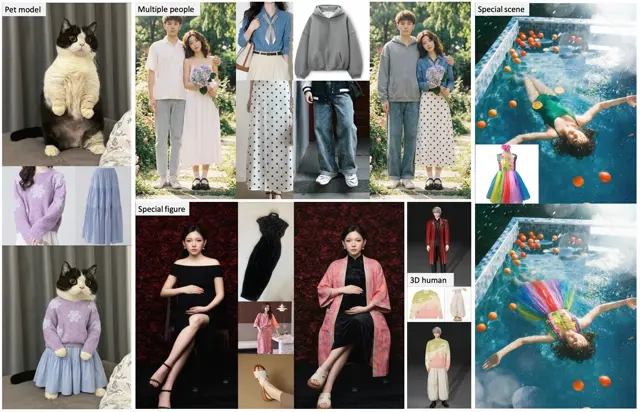

iTryOn: Mastering Interactive Video Virtual Try-On with Spatial-Semantic Guidance
Interactive video virtual try-on with spatial and semantic control.
Algorithm Engineer · Alibaba Group
My research focuses on virtual try-on.
I am an Algorithm Engineer in the AI Native Applications department at Alibaba, where I work on virtual try-on. My broader research interests include image and video generation.
I received my master’s degree in Control Science and Engineering from Sun Yat-sen University in June 2026, advised by Prof. Xiaodan Liang. I also received my bachelor’s degree from Sun Yat-sen University in 2023.
Virtual try-on and visual generation. * Equal contribution.
Interactive video virtual try-on with spatial and semantic control.
Dynamic attention for temporally consistent video virtual try-on.
Learning in-the-wild video try-on from human dance videos.

Authors listed alphabetically in the report.
Robust virtual try-on across diverse fashion items and real-world conditions.
Swift-Image: compact models for unified image generation and editing.
Capability-aligned data construction and training curricula for image generation.
Algorithm Engineer
AI Native Applications · Virtual try-on
Previously: Algorithm Intern, from Feb. 2025
Algorithm Intern
Master’s degree in Control Science and Engineering
Advisor: Prof. Xiaodan Liang
Bachelor’s degree in Intelligence Science and Technology